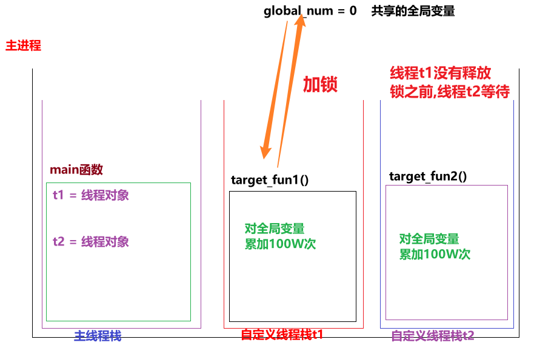

多线程特点_随机性
Python
""" 案例: 演示多线程特点. 多线程特点: 1. 线程执行具有随机性, 原因是因为CPU在做着高效的切换. 2. 默认情况下, 主线程会等待子线程结束再结束. 3. (同一个进程的)线程间 数据共享。 4. 多线程操作共享数据， 可能会出现安全问题， 可以用 互斥锁解决。 CPU调度资源的策略： 1.均分时间片 2.抢占式调度 """ # 需求: 创建多个线程, 多次运行, 观察结果. # 导包 import threading import time # 1.定义多线程的目标函数. def print_info(): # 1.1 休眠 time.sleep(0.2) # 1.2 获取当前线程对象. current_thread = threading.current_thread() # 1.3 打印当前线程的名字. print(current_thread.name) # 2. 测试 if __name__ == '__main__': # 2.1 创建10个线程, 观察其运行效果. for i in range(10): t = threading.Thread(target=print_info) t.start()
多线程特点_守护线程
Python
""" 案例: 演示多线程特点之 守护线程. 多线程特点: 1. 线程执行具有随机性, 原因是因为CPU在做着高效的切换. 2. 默认情况下, 主线程会等待子线程结束再结束. 3. (同一个进程的)线程间 数据共享。 4. 多线程操作共享数据， 可能会出现安全问题， 可以用 互斥锁解决。 """ # 导包 import threading, time # 1.定义目标函数. def work(): for i in range(10): time.sleep(0.2) print('工作中...') # 2. 测试. if __name__ == '__main__': # 2.1 创建(子)线程对象. # (守护线程)写法1: daemon属性 # t = threading.Thread(target=work, daemon=True) # (守护线程)写法2: setDaemon()函数, 已过时(暂时还支持, 以后的新版本中可能会被移除掉). # t = threading.Thread(target=work) # t.setDaemon(True) # (守护线程)写法3: daemon属性 t = threading.Thread(target=work) t.daemon = True # 2.2 启动线程. t.start() # 2.3 设置主线程休眠时间1秒 time.sleep(1) # 2.4 设置主线程的结束标记. print('主线程结束了!')
多线程特点_数据共享
Python
""" 案例: 演示多线程特点之 数据共享. 多线程特点: 1. 线程执行具有随机性, 原因是因为CPU在做着高效的切换. 2. 默认情况下, 主线程会等待子线程结束再结束. 3. (同一个进程的)线程间 数据共享。 4. 多线程操作共享数据， 可能会出现安全问题， 可以用 互斥锁解决。 """ # 需求: 定义全局变量my_list = [], 定义两个目标函数分别实现添加, 查看数据. 最后创建两个线程, 分别执行对应的任务, 观察结果. # 导包 import threading, time # 1.定义全局变量 my_list = [] # 2. 定义目标函数, 添加数据. def write_data(): for i in range(1, 6): my_list.append(i) print("写入数据: ", i) print(f'write_data函数: {my_list}') # 3. 定义目标函数, 查看数据. def read_data(): # 休眠, 即: 等待write_data()执行结束在结束. time.sleep(2) print(f'read_data函数: {my_list}') # 4. 测试 if __name__ == '__main__': # 4.1 创建线程对象, 并且启动线程. t1 = threading.Thread(target=write_data) t2 = threading.Thread(target=read_data) # 4.2 启动线程. t1.start() t2.start()
多线程特点_互斥锁
- 图解

- 代码
Python
""" 案例: 演示多线程共享全局变量, 可能出现的问题. 多线程共享全局变量, 出现问题的问题: 累加次数不够. 产生原因: 线程1还没有来记得执行完(一个完整的动作)前, 被线程2抢走了资源, 就可能出问题. 解决方案: 加锁思想, 即: 互斥锁. 细节: 使用互斥锁的时候, 要在合适的时机释放所, 否则可能出现 死锁 或者 锁不住的情况. """ # 需求: 定义两个函数, 分别对全局变量累加100W次, 创建两个线程, 关联这两个函数, 执行看效果. # 导包 import threading # 1.定义全局变量. global_num = 0 # 创建线程锁. mutex = threading.Lock() # mutex2 = threading.Lock() # 2.定义目标函数1, 对全局变量累加100W次. def target_fun1(): mutex.acquire() # 加锁 # 2.1 声明为全局变量 global global_num # 2.2 遍历100W次, 对全局变量进行累加. for i in range(1000000): # 2.3 具体的累加动作 global_num += 1 # 2.4 累加完毕后, 打印结果. print(f'target_fun1函数结果: {global_num}') mutex.release() # 释放锁 # 3.定义目标函数2, 对全局变量累加100W次. def target_fun2(): mutex.acquire() # 加锁 global global_num for i in range(1000000): global_num += 1 print(f'target_fun2函数结果: {global_num}') mutex.release() # 释放锁 # 4.测试. if __name__ == '__main__': # 4.1 创建两个线程, 分别关联上述的两个目标函数. t1 = threading.Thread(target=target_fun1) t2 = threading.Thread(target=target_fun2) # 4.2 开启线程. t1.start() t2.start()
进程和线程对比
Python
进程和线程的区别: 1. 线程依赖进程, 进程是CPU分配资源的基本单位, 线程是CPU调度资源的基本单位. 2. 进程更消耗资源, 不能共享全局变量, 相对更稳定. 3. 线程更轻量级, 可以共享全局变量, 相对更灵活.